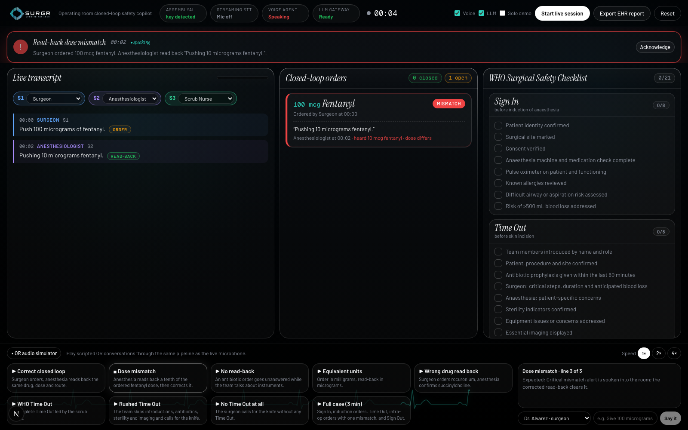
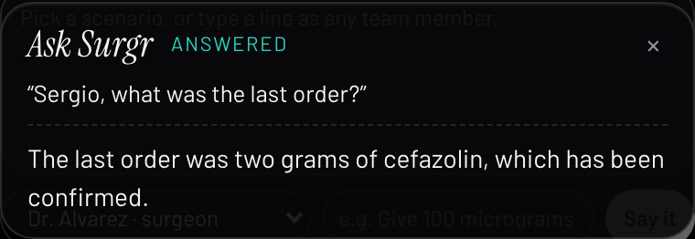
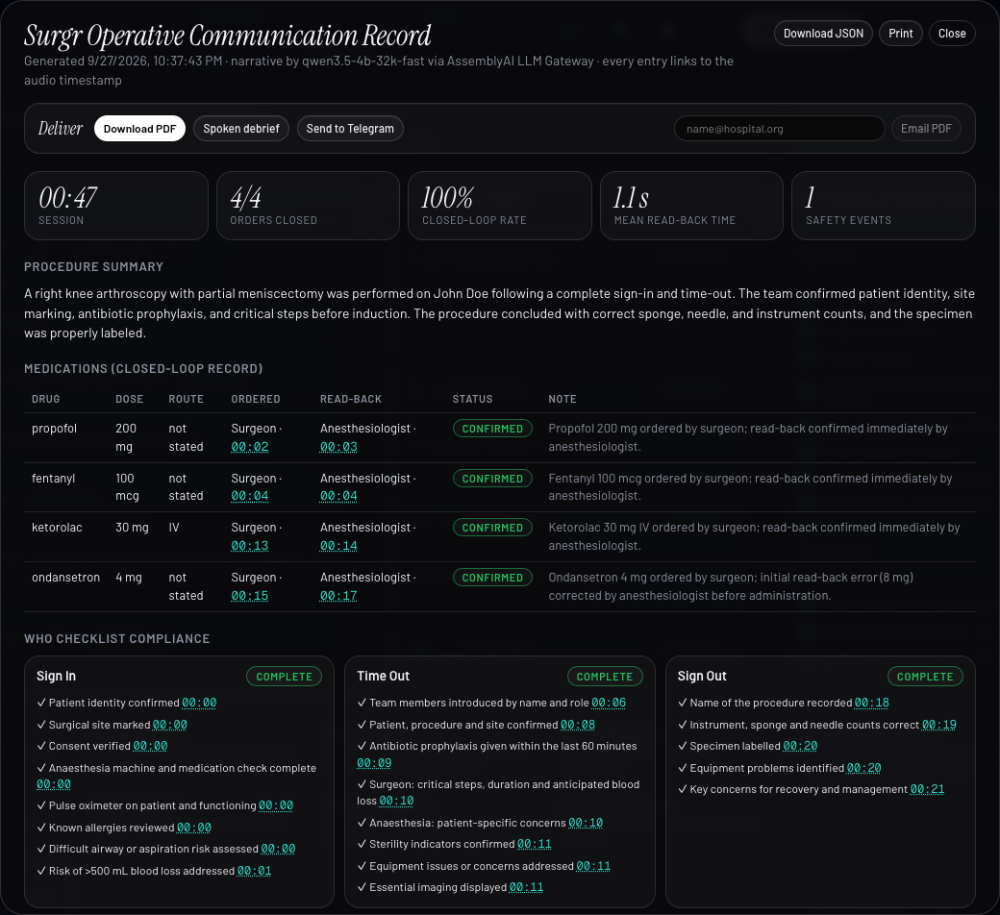

A real-time closed-loop safety copilot for the operating room. It listens, checks every drug order against its read-back, tracks the WHO checklist, speaks up when a loop does not close, and writes the audit record.
Drugs in surgery are ordered by voice. The standard is closed-loop communication: repeat the order back, get it confirmed, then act. Aviation made that mandatory decades ago. In an operating room it depends on people remembering under noise, fatigue and time pressure. Nothing beeps when a read-back does not happen.
perioperative medication administrations involve an error or adverse drug event
Nanji et al., Anesthesiology, 2016
major complications after the WHO Surgical Safety Checklist; deaths 1.5% → 0.8%
Haynes et al., NEJM, 2009
sentinel events involve a breakdown in team communication
The Joint Commission
major operations performed worldwide every year
Weiser et al., 2016
Room audio streams to AssemblyAI. Medical mode gets drug names and doses right; speaker labels tell surgeon, anesthesiologist and nurse apart on one microphone.
A deterministic classifier parses orders, read-backs and checklist statements in under a millisecond. Ambiguous drug talk goes to the LLM Gateway under a strict JSON schema.
Every order gets ten seconds to be read back. Wrong dose, wrong drug, wrong route or silence, and Surgr speaks the alert into the room through the Voice Agent.
An operative communication record where every order, read-back, checklist item and safety event links to the exact second in the audio. PDF, Telegram, email, spoken debrief.
What the room hears about one second after a wrong read-back. This sentence is the product.

The Voice Agent listens to the room for the whole case. Anything not addressed to Surgr is answered with silence, discarded before it plays. Say its name and it answers from live state through JSON-schema tools.

Verified against the live Voice Agent API: tool call issued, result returned, answer spoken.

| Layer | AssemblyAI product | How Surgr uses it |
|---|---|---|
| Live transcription | Streaming v3 · universal-3-6-pro | Medical mode formats drugs and doses; 47-drug keyterm list; clinician silence thresholds; short-lived browser tokens. |
| Who is speaking | speaker_labels | True diarization on one microphone, so a read-back from the person who gave the order is caught. |
| Understanding | LLM Gateway | JSON-schema classification of ambiguous drug talk; report narrative. Budget read from rate-limit headers, never blocks the safety loop. |
| Voice in the room | Voice Agent API | Alerts via reply.create; continuous room listening with silent-reply suppression; six client tools answer questions from live state. |
A 78-second three-voice rehearsal streamed to AssemblyAI transcribed all nine lines verbatim with two speaker labels and doses written as digits by medical mode.
A mismatch alert was spoken word for word (eleven seconds of audio). Tool calling confirmed: question in, get_open_orders called, answer spoken.
A real session in Chrome: two voices separated, three alerts spoken at the right moments, orders closed, report exported, printed and delivered.
rule classification per utterance
from a wrong read-back to the spoken alert
read-back window before a timeout alert
Nine scripted scenarios run through the engine as a regression suite. Solo demo mode and a rehearsal audio file let anyone test without a second person.
A second check on every dose before the syringe goes in. The person who benefits most, because they are the one administering.
Confirmation that what was said is what is being given, without policing it. Orders, read-backs and alerts documented for them.
The checklist tracks itself. No clipboard, no chasing eight items while the room moves on.
Objective closed-loop and checklist compliance per room and per team, and a defensible timestamped record when an incident is reviewed.
A microphone, a speaker, Surgr on the wall or nowhere visible. The team works as before. Once or twice a week it says “read-back mismatch, please re-confirm”. That sentence is the product.
major operations a year worldwide, in an estimated 250,000+ operating rooms across hospitals and surgery centres.
≈40,000 US operating rooms × $500 per OR per month. Sold to hospital quality and perioperative leadership.
≈1,000 simulation centres and residency programmes at $10k per site licence, where instant spoken feedback needs no regulatory clearance.
Per-OR subscription for live use · site licences for simulation and training · analytics tier for quality offices · integration services for EHR export. Figures are planning estimates, not audited market data.
| Category | Examples | What they do | What Surgr does differently |
|---|---|---|---|
| Ambient clinical scribes | Abridge, Nuance DAX, Ambience | Turn conversations into notes after the fact. | Acts during the case, in the room, out loud. |
| OR black-box analytics | Surgical Safety Technologies | Record the OR for retrospective review. | Closes the loop in the moment; the record is a by-product. |
| Checklist apps | Digital WHO checklists | Someone taps items on a tablet. | Items tick from speech; skipped phases are spoken alerts. |
| Hackathon look-alikes | OR and resuscitation voice recorders | Same instinct: transcribe and flag. | Deterministic dose and unit logic, speaker-aware self-read-back detection, a room that can ask questions, delivery to Telegram and a spoken debrief, all verified live. |
Moat: the deterministic safety engine and the evidence base it produces, not the transcription layer.
Residency programmes and simulation labs. Instant spoken feedback teaches closed-loop discipline. No regulatory barrier.
Compliance analytics per room and per team, no intervention. Builds the evidence base and the pilot relationships.
After clinical validation and regulatory clearance. Multilingual rooms, EHR integration, on-premise audio.
Surgr is a prototype, not a medical device. Similar voices can share a speaker label. Hackathon accounts get two LLM Gateway requests a minute, so the deterministic engine does the real-time work and the record says when the narrative fell back to the local summary.
Surgr gives them both.